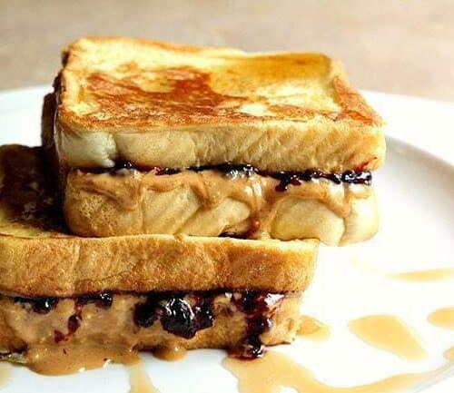

PEANUT BUTTER FRENCH TOAST SANDWICH

Description
Peanut butter french toast sandwiches: a unique breakfast idea that combines the goodness of French toast with the richness of peanut butter.
It combines the familiar comfort of french toast with the nutty richness of peanut butter, creating a unique and delicious morning treat!
Ingredients
- 4 slices of bread
- 2 eggs
- 2 tablespoons peanut butter (smooth or crunchy, as preferred)
- 1 tablespoon butter or oil
- Maple syrup or honey (optional, for drizzling)
- For serving: Fresh fruits
Instructions
-
Spread peanut butter on two slices of bread and then create a sandwich with the remaining slices.
-
In a shallow bowl, beat the eggs until well combined.
-
Dip each sandwich into the beaten eggs, ensuring both the sides are coated evenly.
-
Heat butter or oil in a skillet over medium heat.
-
Place the egg-coated sandwiches in the skillet and cook for a few minutes on each side until they are golden brown and the egg coating is cooked through.
-
Remove the sandwiches from the skillet and let them cool slightly.
-
Cut each sandwich into halves or quarters, creating smaller pieces for serving.
-
Optionally, drizzle some maple syrup or honey over the sandwich toast.
-
Serve with fresh fruit on the side, if desired.